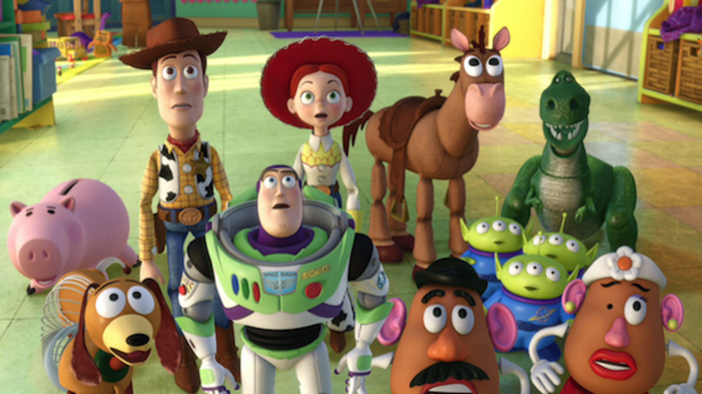
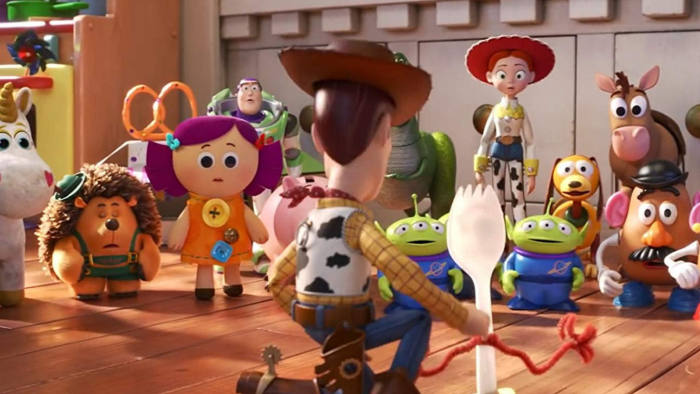

Toy story
-

Toy story is was the first entirely computer-animated feature film, also the first feature film by Pixar. This story's thema is taking place in a world where anthropomorphic toys have life when there are no humans.Its unique view of the world has won many enthusiastic fans. It is still loved today and has numerous series.
-

Toy story earned over $373 million at the worldwide box office . It was praced by critics and audiences for the technical innovation of the 3D animation, the wit and thematic sophistication of the screenplay, the musical score, and the voice performances of actors.In addition, the video expression that makes full use of the latest technology has been highly evaluated.